Entrega g1.3 · solicitud revisión 3 · 22 octubre 2026
Escala 1:4,5.
Tren recogido en el GLB.
Actualización de la g1.2 aceptada: aumento uniforme de 10/9 y exportación en el fotograma 100. Piezas, pinturas, UV, jerarquía y rotaciones conservadas.
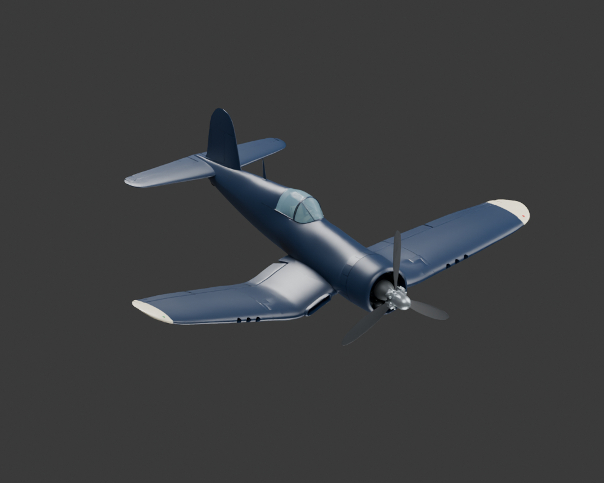
Archivo exportado comprobado
Estas imágenes proceden del GLB reimportado. Sus transformaciones coinciden con la fuente en el fotograma 100, con un error máximo de posición de 0,000179 mm.

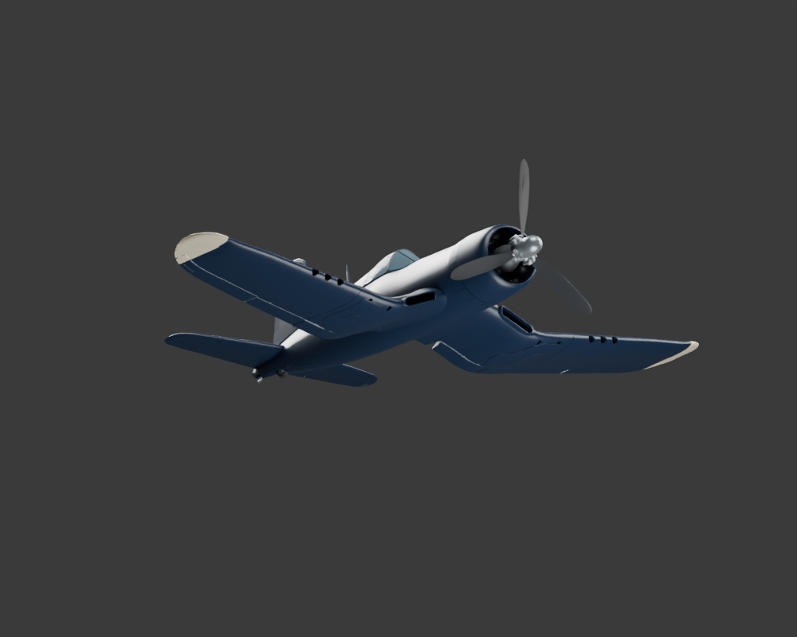

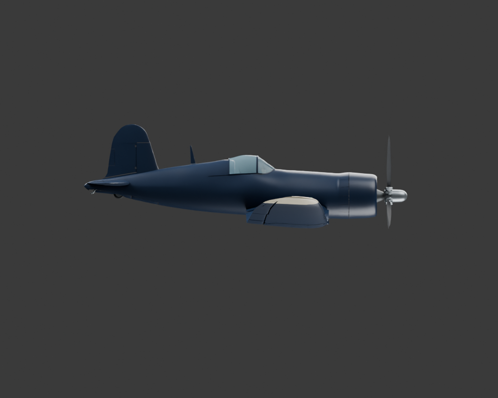
Retracción conservada
El archivo Blender abre con el tren abajo para editarlo. La exportación lo recoge automáticamente. La acción conserva sus 101 muestras y 17 elementos animados.


Medidas y continuidad
| Magnitud | Valor |
|---|---|
| Envergadura | 2,7777705 m |
| Longitud entre hitos | 2,3811179 m |
| Diámetro de hélice | 0,9003021 m |
| Diámetro nominal de ruedas principales / cola | 0,1880 / 0,07778 m |
| Separación de centros de ruedas principales | 0,8622222 m |
La topología y las UV son idénticas a g1.2. Las posiciones y claves de traslación se multiplicaron por 10/9; las rotaciones no cambiaron.
Vistas ortográficas y comparación con la referencia R59

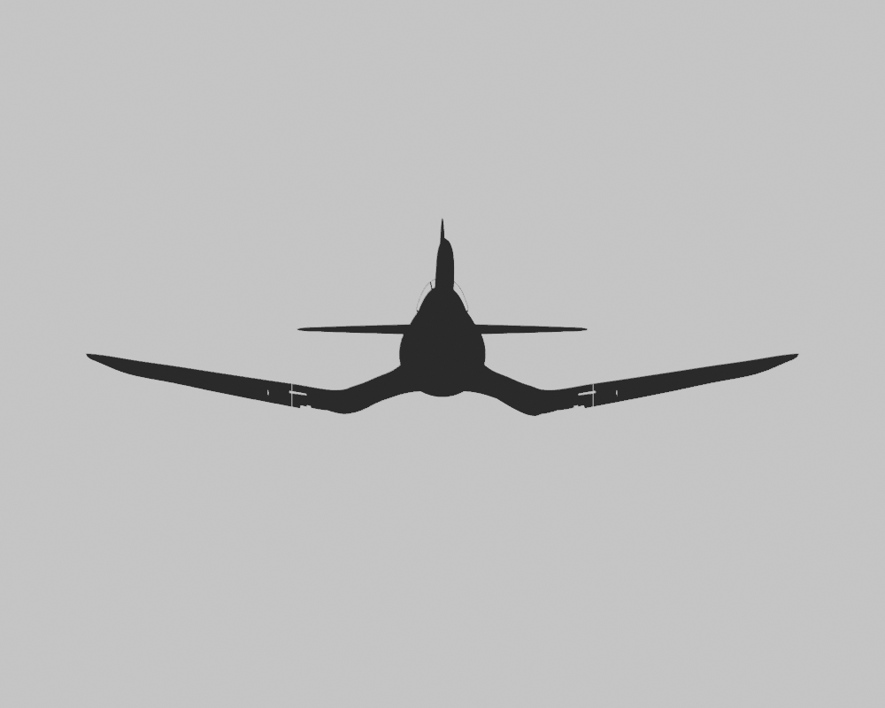

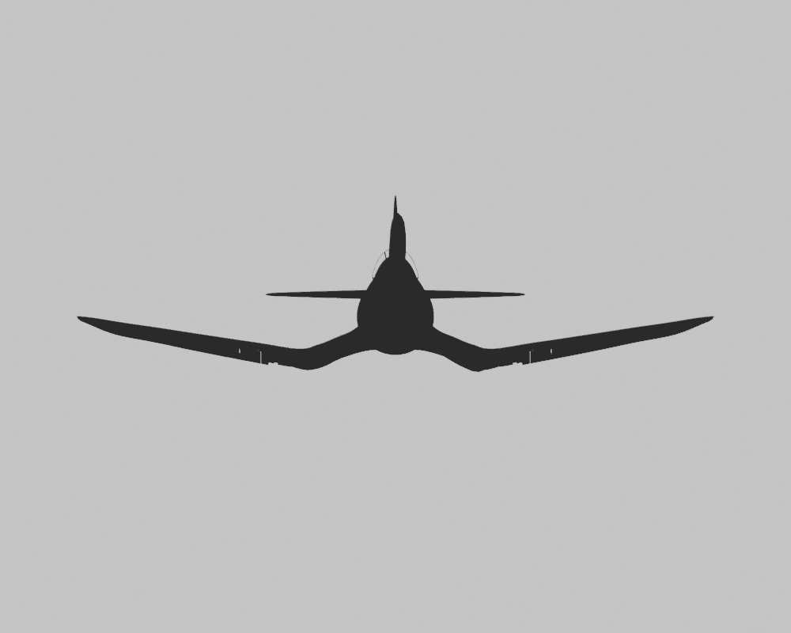

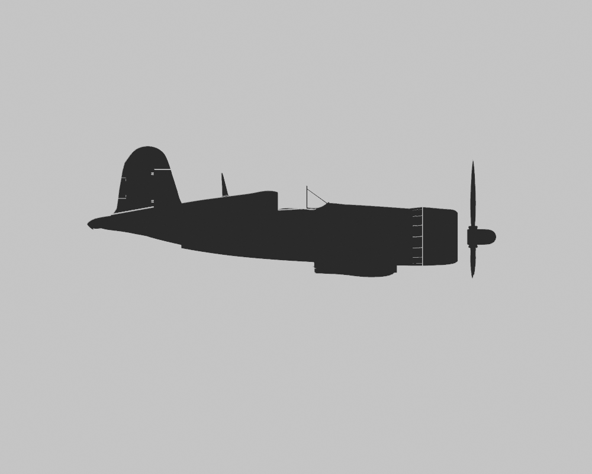


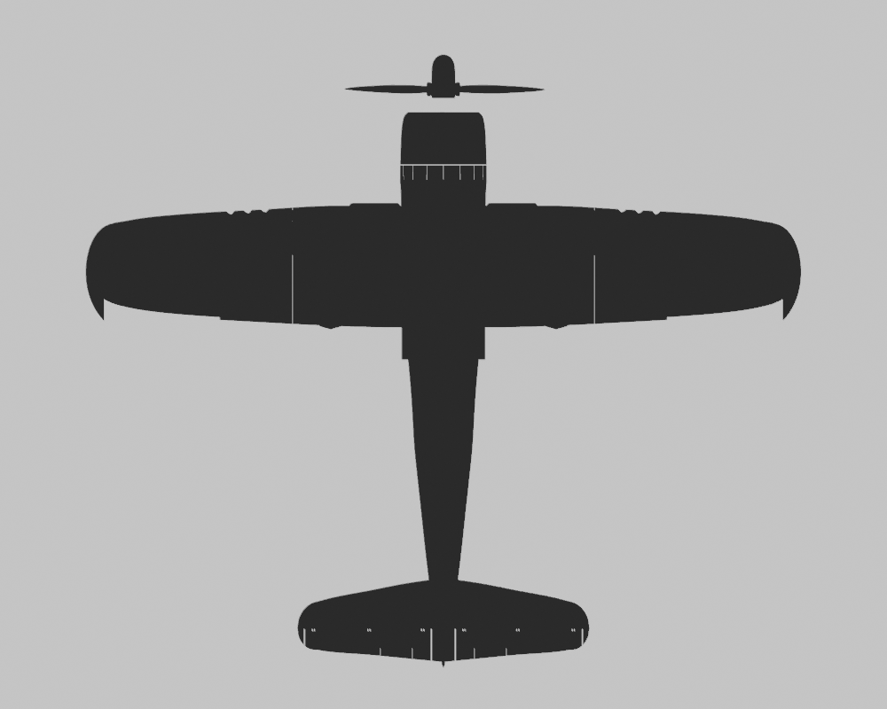
Pinturas aceptadas, conservadas


Todos los archivos de las tres pinturas son idénticos a los de g1.2. Esta entrega corresponde a la solicitud revisión 3 y se guarda aparte de la anterior revisión de pinturas también llamada g1.3.
Controles y comprobaciones
- Verificación estructural, escala y coincidencia del GLB con el fotograma 100: correctas.
- Reexportación independiente sin R59 ni texturas externas: GLB idéntico.
- Barridos de controles y 21 posiciones de compuertas sin contactos con los vecinos comprobados.
- Pruebas negativas rechazan una bisagra ausente, una etiqueta inválida, el tren abajo y la escala anterior.
- R59, g1.2 y las entregas previas permanecen intactos.
Ver controles y separación de secciones

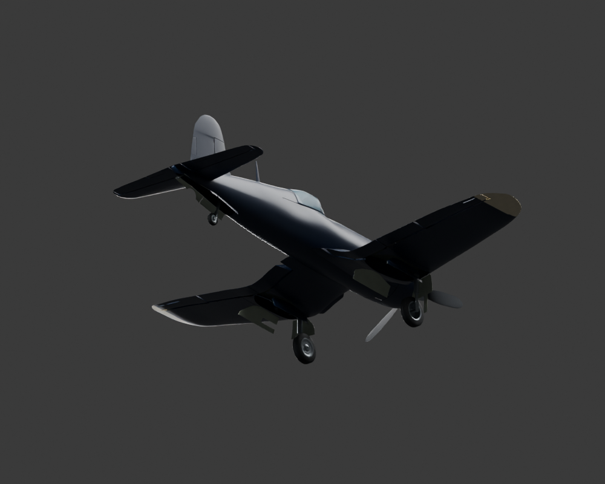

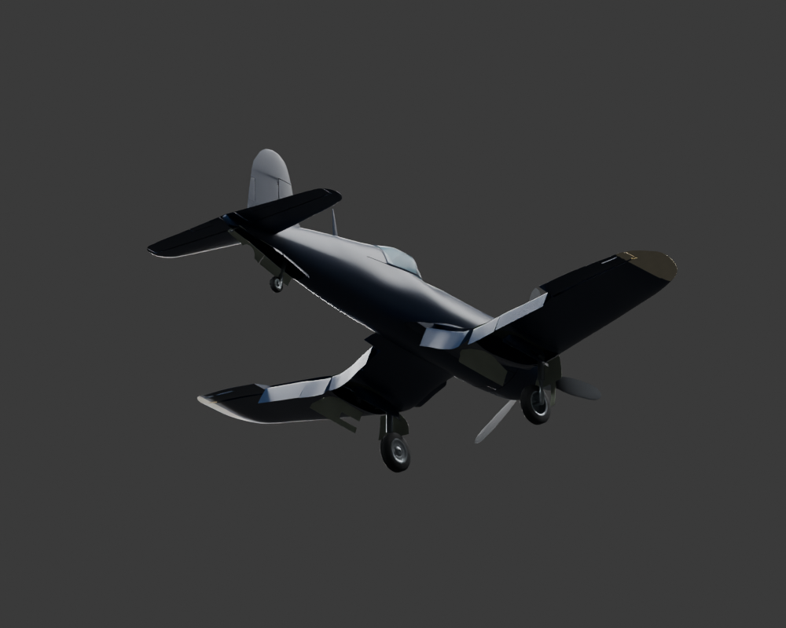

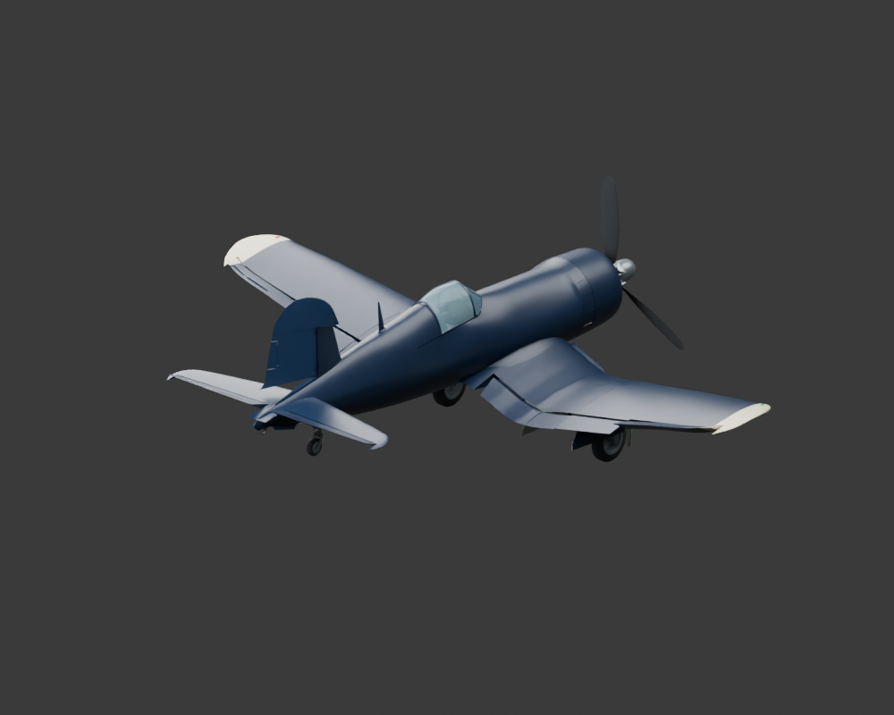

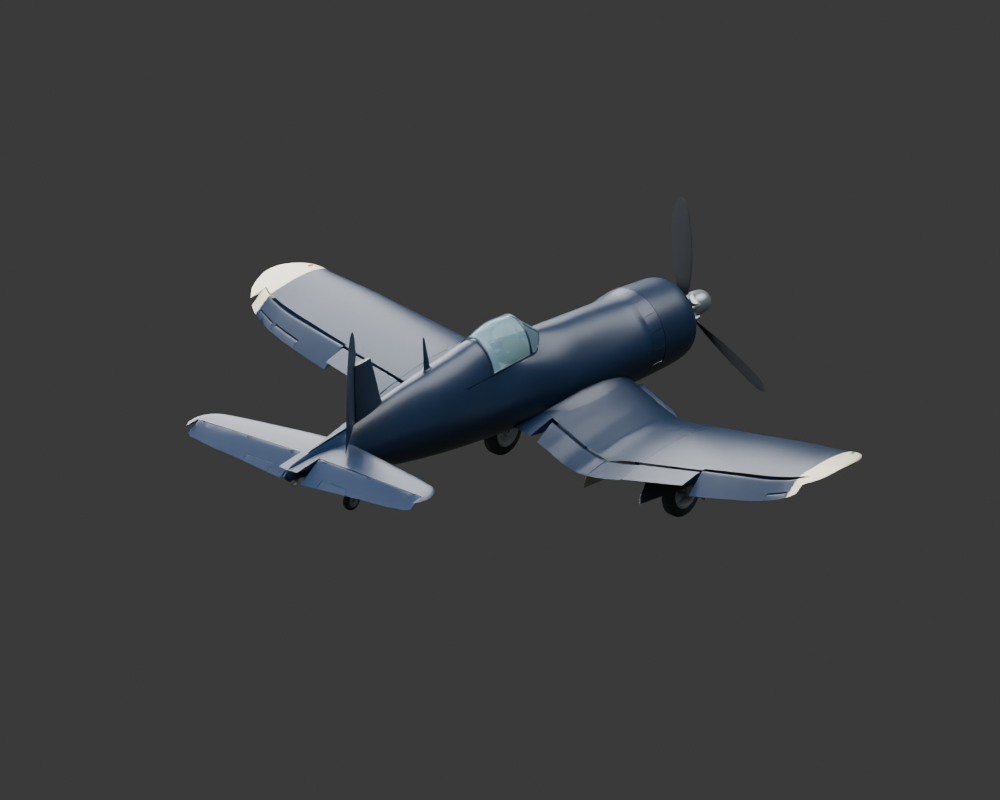

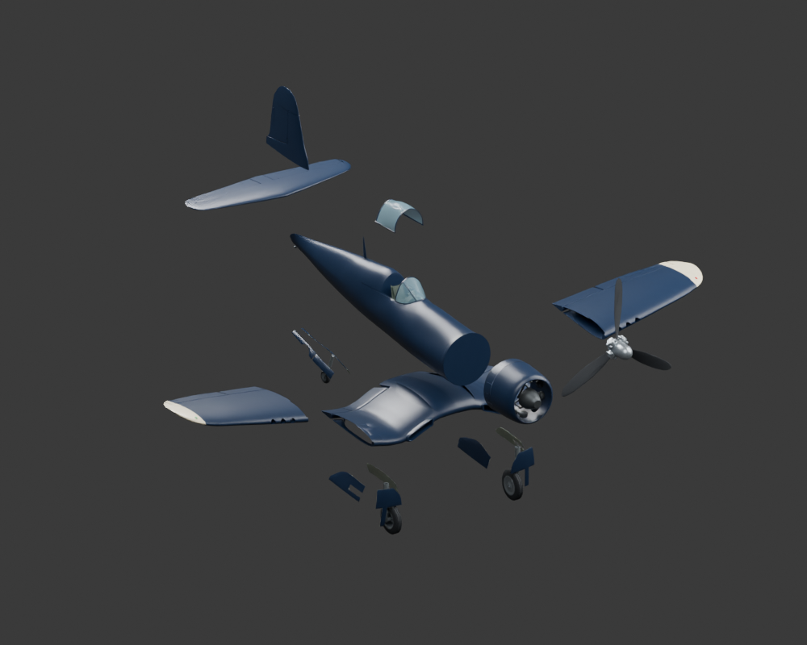
Las holguras se comprueban en muestras discretas. La integración en Godot corresponde al equipo receptor y no se ha ejecutado aquí. Se mantienen las simplificaciones y la discrepancia de longitud documentadas en la guía.